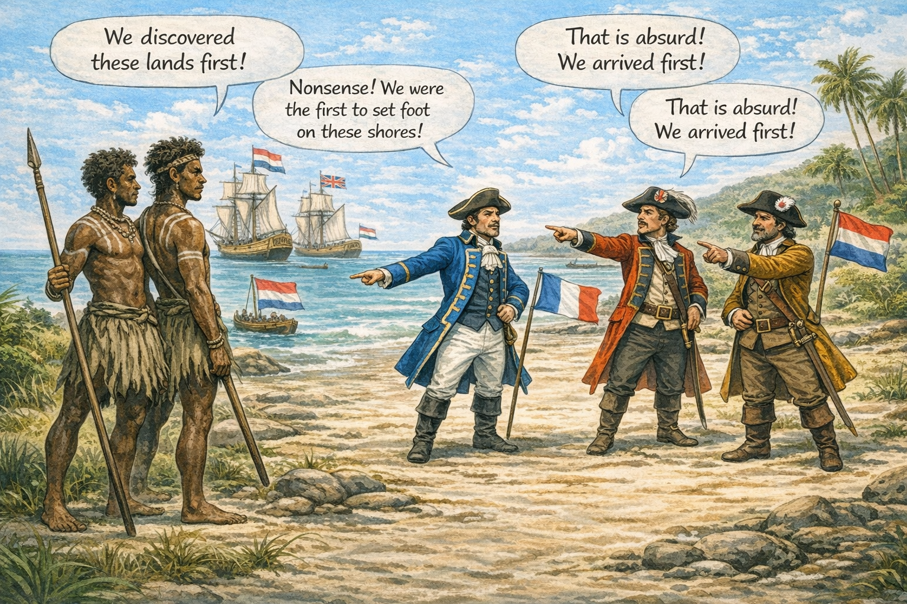
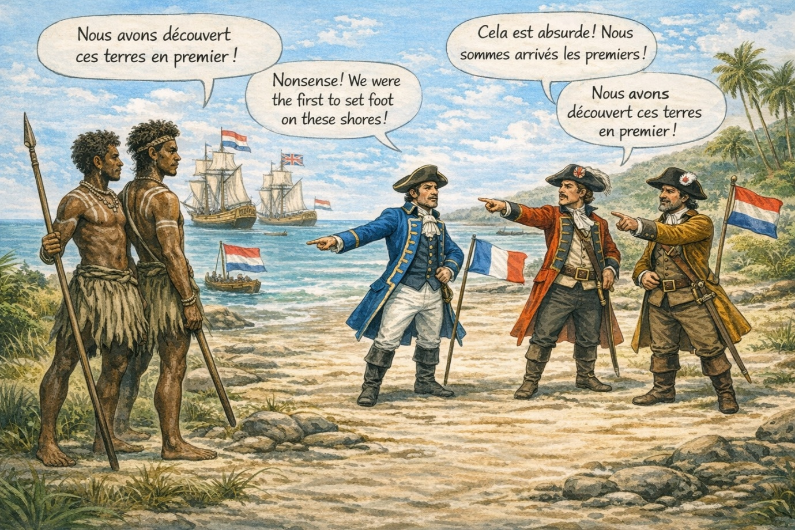

3. The Right of First Discovery 

AI-generated illustration (ChatGPT, OpenAI), created for interpretative purposes.
It is important to emphasise that no inquiry was undertaken by the crews of either expedition into pre-existing Indigenous toponyms during their encounters with local populations. The commanders, d’Entrecasteaux and Baudin, proceeded to name places and geographical features in accordance with the European conception of the “right of first discovery”, a doctrine formulated in the late fifteenth and sixteenth centuries, during the period which nineteenth-century French historiography termed the Grandes Découvertes.
Under this principle, captains making landfall upon coasts hitherto unknown to Europeans were deemed entitled to name the spaces they were the first to chart, in the name of their sovereign and nation. Tacitly acknowledged among European powers, this practice of naming intensified towards the end of the eighteenth century, within a context of mounting imperial rivalries and competition for overseas expansion.
The “right of first discovery” did not necessarily entail a right of colonisation, and the prerogatives it implied were not always acted upon, although they remained an option for the power of the initial discoverer. Neither the Dutch nor the French authorities exercised such a right in Australia. Nevertheless, the European practice of assigning proper names to geographical features—while disregarding pre-existing Indigenous designations—contributed to underpinning European claims to the southern lands.
The exercise of these naming rights also gave rise to a dispute between the co-editors of the French accounts and atlases of Baudin’s voyage, François Péron and Louis de Freycinet, and the English navigator Matthew Flinders.
3. Le droit de la première découverte

Illustration générée par IA (ChatGPT, OpenAI), réalisée à des fins interprétatives.
Il convient de souligner qu’aucune enquête relative aux dénominations autochtones préexistantes ne fut entreprise par les équipages des deux expéditions lors de leurs rencontres avec les populations locales : les commandants, d’Entrecasteaux et Baudin, procédèrent à la dénomination de lieux et d’entités géographiques conformément à la conception européenne du « droit de première découverte », élaborée à la fin des XVe et XVIe siècles, à une époque que l’historiographie française du XIXe siècle désigna sous le vocable de « Grandes Découvertes ».
Selon ce principe, les capitaines abordant des côtes encore inconnues des Européens se voyaient reconnaître le droit de nommer les espaces qu’ils étaient les premiers à relever sur leurs cartes, au nom du souverain et de la nation. Tacitement admise entre les puissances européennes, cette pratique de nomination s’accentua à la fin du XVIIIe siècle, dans un contexte de rivalités impériales croissantes et de compétition pour l’expansion outre-mer.
Le « droit de première découverte » ne conférait pas nécessairement un droit de colonisation, et les prérogatives qu’il impliquait ne furent pas toujours suivies d’effets, bien qu’elles demeurassent une option pour la puissance du premier découvreur. Ni les autorités néerlandaises ni les autorités françaises n’exercèrent ce droit en Australie. Toutefois, la pratique européenne consistant à attribuer des noms propres aux lieux géographiques en ignorant les dénominations autochtones préexistantes contribua à étayer les prétentions européennes sur les terres australes.
L’exercice de ces droits de nomination fut également à l’origine d’un différend opposant les coéditeurs des récits et atlas français du voyage de Baudin, François Péron et Louis de Freycinet, au navigateur anglais Matthew Flinders.